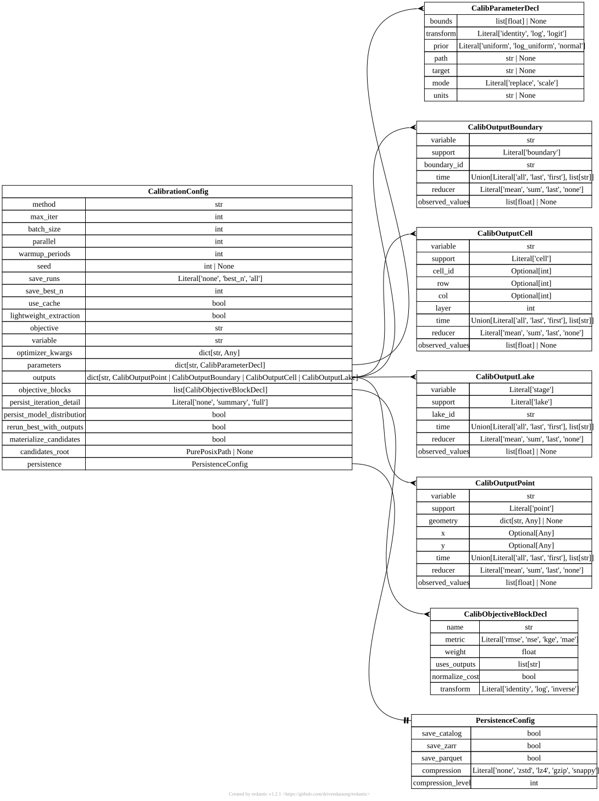

[calibration] CalibrationConfig#
TOML section: [calibration]
Pydantic model: CalibrationConfig defined in hydromodpy.calibration.config.
Top-level [calibration] section.
The config selects the optimizer, iteration budget, candidate persistence
policy, parameter declarations, observable outputs, and objective blocks.
It is the stable user-facing schema used by CLI calibration and
Project.calibrate.
When no explicit objective block is declared, HydroModPy can synthesize one
from objective and variable if the matching output exists.
Fields#
method
str default = “grid” user source
Optimization method. Optuna is installed by default; install the calibration extra for cma_es and Optuna’s cmaes sampler.
batch_size
int default = 1 dev source
Number of suggestions drawn per ask (for parallel optimizers).
parallel
int default = 1 dev source
Number of trials evaluated concurrently inside one batch via a thread pool. parallel=1 keeps the legacy sequential loop.
save_runs
Literal[‘none’, ‘best_n’, ‘all’] default = “none” user source
How much to persist per iteration: - ‘none’: 1 DuckDB row per iteration, no Zarr. - ‘best_n’: same + promote top N to full simulations after the loop. - ‘all’: every iteration becomes a full simulation (Zarr included).
save_best_n
int default = 10 user source
Number of top iterations to promote when save_runs=’best_n’.
lightweight_extraction
bool default = True dev source
Skip Parquet/Zarr writes for lumped models (GR4J, …) and read simulated series from the per-trial RAM cache instead. Only the promoted runs go through the catalog write path.
optimizer_kwargs
in TOML:
[calibration.optimizer_kwargs.<id>]
dict[str, Any] factory dev source
Extra keyword arguments forwarded to the optimizer adapter.
parameters
in TOML:
[calibration.parameters.<id>]
dict[str, CalibParameterDecl] factory user source
Per-parameter declarations (bounds, transform, prior, path).
outputs
in TOML:
[calibration.outputs.<id>]
support = “point” | “boundary” | “cell” factory user source
Named observables extracted from each candidate run.
Pick a tab below: setting
supportselects the matching schema.
TOML: [calibration.outputs.point.<id>] – model CalibOutputPoint (set support = "point").
geometry
in TOML:
[calibration.outputs.point.<id>.geometry.<id>]
dict[str, Any] | None default = None user source
GeoJSON point geometry. Coordinates are in metres.
x
Optional[Any] default = None user source
X coordinate. Accepts a bare number (metres) or a pint string like ‘100 m’.
y
Optional[Any] default = None user source
Y coordinate. Accepts a bare number (metres) or a pint string like ‘100 m’.
time
Union[Literal[‘all’, ‘last’, ‘first’], list[str]] default = “all” user source
‘all’ keeps every time step; ‘last’ / ‘first’ selects one; a list of ISO timestamps selects specific steps.
reducer
Literal[‘mean’, ‘sum’, ‘last’, ‘none’] default = “none” user source
Aggregation over the retained time slice.
observed_values
list[float] | None default = None user source
Hard-coded observed values (used by twin-synthetic cases).
TOML: [calibration.outputs.boundary.<id>] – model CalibOutputBoundary (set support = "boundary").
time
Union[Literal[‘all’, ‘last’, ‘first’], list[str]] default = “all” user source
‘all’ keeps every time step; ‘last’ / ‘first’ selects one; a list of ISO timestamps selects specific steps.
reducer
Literal[‘mean’, ‘sum’, ‘last’, ‘none’] default = “none” user source
Aggregation over the retained time slice.
observed_values
list[float] | None default = None user source
Hard-coded observed values (used by twin-synthetic cases).
TOML: [calibration.outputs.cell.<id>] – model CalibOutputCell (set support = "cell").
time
Union[Literal[‘all’, ‘last’, ‘first’], list[str]] default = “all” user source
‘all’ keeps every time step; ‘last’ / ‘first’ selects one; a list of ISO timestamps selects specific steps.
reducer
Literal[‘mean’, ‘sum’, ‘last’, ‘none’] default = “none” user source
Aggregation over the retained time slice.
observed_values
list[float] | None default = None user source
Hard-coded observed values (used by twin-synthetic cases).
objective_blocks
in TOML:
[[calibration.objective_blocks]]
list[CalibObjectiveBlockDecl] factory user source
Weighted blocks making up a composite objective. When empty, a single implicit block is built from ‘objective’ and ‘variable’.
persist_iteration_detail
Literal[‘none’, ‘summary’, ‘full’] default = “summary” dev source
‘none’ skips component metrics; ‘summary’ keeps block totals; ‘full’ also stores per-block raw and normalized costs.
persist_model_distribution
bool default = False dev source
Persist the candidate distribution alongside the session.
rerun_best_with_outputs
bool default = False user source
Replay the best candidate with full outputs after the loop.
materialize_candidates
bool default = False dev source
Write a standalone override TOML for each candidate under ‘candidates_root’ so runs can be replayed later.
candidates_root
PurePosixPath | None default = None dev source
Directory for per-candidate overlay TOMLs. Required when materialize_candidates is True.
persistence
in TOML:
[calibration.persistence]
PersistenceConfig factory user source
Single switch governing every persistence sink (catalog, Zarr, Parquet, lockfile) for calibration outputs.
Starter TOML snippet#
Entity-relationship diagram#
{kind=link}

Click to zoom and pan. Press Esc or click outside to close.